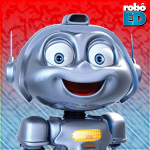

Canais e Grupos

Canal
Todos as descrições das pessoas são sobre a humanidade do atendimento, a pessoa pega no pulso, examina, olha com carinho. Então eu acho que vai ter outra coisa, que os médicos cubanos trouxeram pro brasil, um alto grau de humanidade.
Divulgação
Primeiro eu queria cumprimentar os internautas. -Oi Internautas! Depois dizer que o meio ambiente é sem dúvida nenhuma uma ameaça ao desenvolvimento sustentável. E isso significa que é uma ameaça pro futuro do nosso planeta e dos nossos países. O desemprego beira 20%, ou seja, 1 em cada 4 portugueses.

Grupo
No meu xinélo da humildade eu gostaria muito de ver o Neymar e o Ganso. Por que eu acho que.... 11 entre 10 brasileiros gostariam. Você veja, eu já vi, parei de ver. Voltei a ver, e acho que o Neymar e o Ganso têm essa capacidade de fazer a gente olhar.